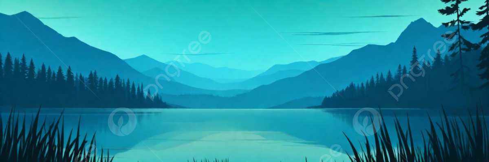
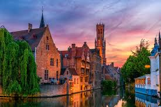
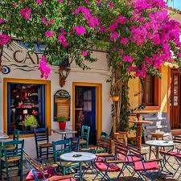

ГОЛОВНА
НОВИНИ
КОНТАКТИ
Ласкаво просимо на сайт про подорожі!
Цікаві міста для подорожей

Тут можна знайти інформацію про міста, які варто відвідати. Від маленьких затишних містечок до великих мегаполісів з історією та культурними пам’ятками.
Додавайте власні маршрути та поради для мандрівників.
Природа та національні парки
 Дізнайся про мальовничі ліси, гори та озера. Ми показуємо приховані куточки природи, маршрути для походів та цікаві місця для фотосесій.
Можна додавати свої поради для походів та кемпінгів.
Дізнайся про мальовничі ліси, гори та озера. Ми показуємо приховані куточки природи, маршрути для походів та цікаві місця для фотосесій.
Можна додавати свої поради для походів та кемпінгів.
Їжа та кафе в подорожах

Поради про місцеву кухню, маленькі кафе та ресторани, які варто відвідати під час мандрів.
Тут можна ділитися власними знахідками та рекомендувати цікаві місця для перекусу.
ANNA CHERNIUK
2026